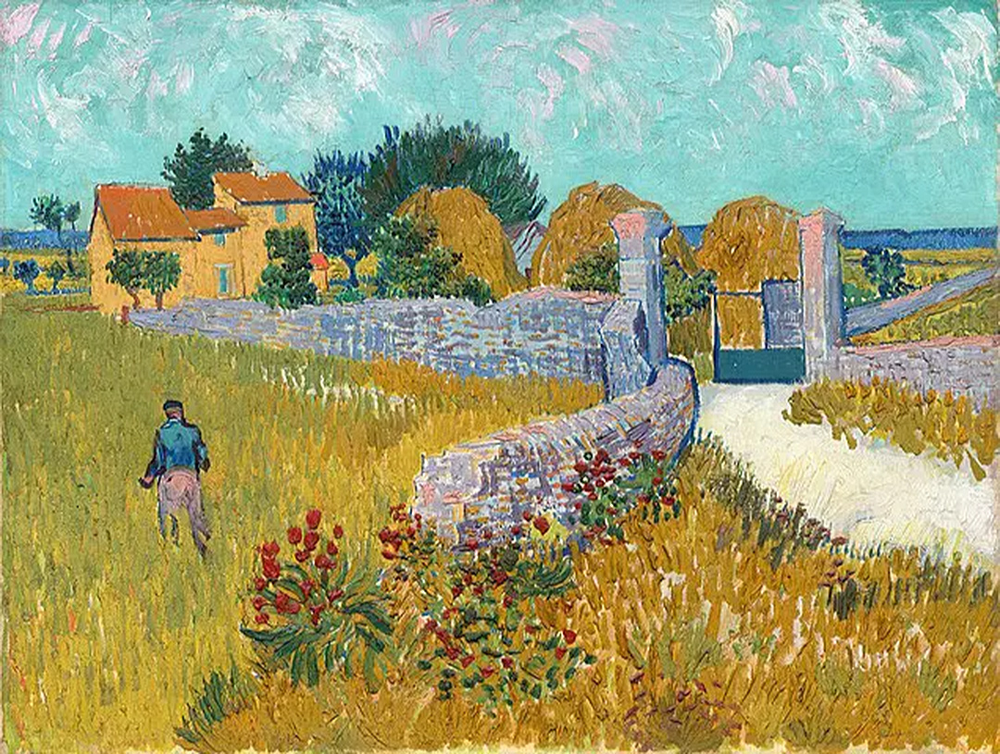
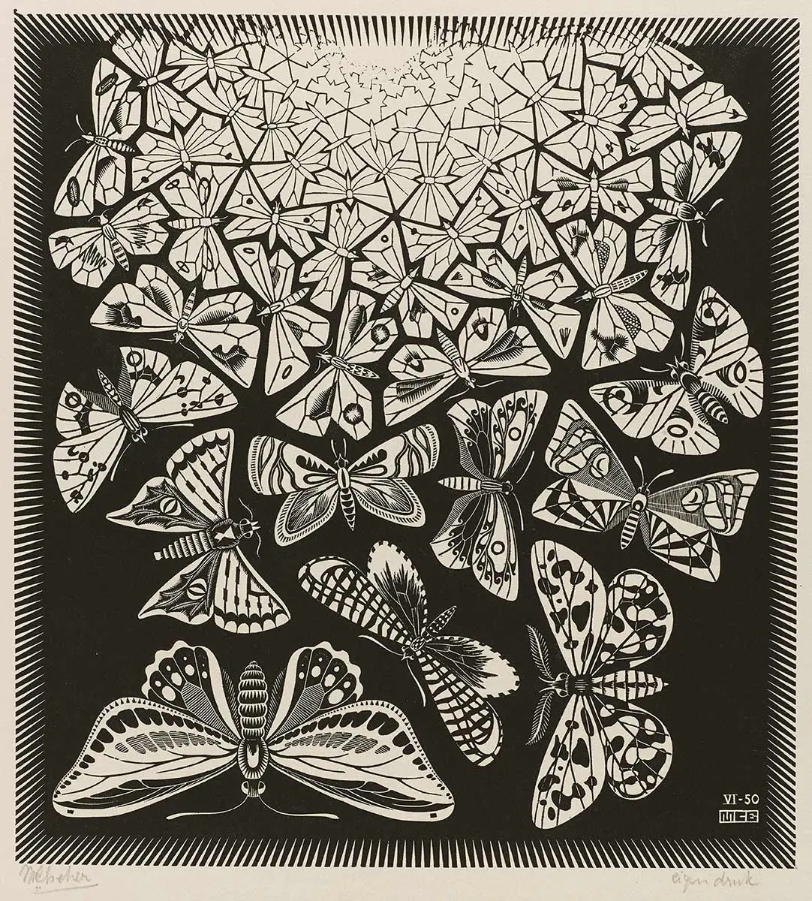

field fertilizer yield
1 A 10 2
2 A 20 3
3 A 30 4
4 B 10 5
5 B 20 6
6 B 30 7
7 C 10 3
8 C 20 4
9 C 30 5Random effects in ML
Uriel Menalled
2026-04-16
Introduction
Often data come from experiments with a hierarchial structure
Hierarchial structure causes data-points to not meet the assumptions of independence as observations from the same group will be correlated to one another

For example, if you were sampling yield in these different fields, observations within the same field would be correlated to one another.
Introduction
Random effects can solve this issue
The issue: Observations nested within groups (fields, varieties, blocks) are not independent
Naiveté: Treating nested data as independent leads to underestimated standard errors and spuriously significant results
Random Effects Solution: Allows each group to have its own deviation from the population intercept (or slope), capturing within-group correlation structure
Modeling Group Variation: Instead of treating group membership as a fixed categorical variable, random effects estimate group-specific offsets while sharing information across groups via a shared probability distribution (typically normal)
Proper Standard Errors: By accounting for within-group correlation, random effects yield valid confidence intervals and p-values appropriate to the actual sample size and design
Efficiency Gain: Partial pooling (shrinkage) of group estimates improves precision compared to fitting completely separate models per group
I will create a synthetic agronomic experiment looking at yield across 5 fields with 3 obs each
The resulting data (
dat) is has a hierarchical structure: observations nested within fields
The simple model
This is a random-intercept-only model where a horizontal line is fit to the grand mean of the data (i.e. yield = 4.33).

BLUPs: Definition
Best Linear Unbiased Predictions of Random Effects (BLUPs): A method that is used in linear mixed models for the estimation of random effects
When combined with fixed effect estimates, BLUPs are used to calculate the model predictions. Basically, the model is saying: Give the fixed and random effects of an observation, this is my prediction of its value
BLUPs: Formula
\[\text{BLUP}_i = \lambda_i (\bar{y}_i - \mu)\]
where \(\lambda_i = \frac{\sigma^2_u}{\sigma^2_u + \sigma^2_e / n_i}\) is the shrinkage factor.
\(\lambda_i\) = shrinkage factor = \(\frac{\sigma^2_u}{\sigma^2_u + \sigma^2_e / n_i}\)
\(\sigma^2_u\) = between-group variance
\(\sigma^2_e\) = residual (within-group) variance
\(n_i\) = number of observations in group \(i\)
\(\bar{y}_i\) = mean observation for group \(i\)
\(\mu\) = fixed intercept (grand mean from
fixef())Shrinkage factor (\(\lambda\)): Controls how much to trust group-specific data
\(\lambda \approx 1\) → high between-group variance → trust data more
\(\lambda < 1\) → low between-group variance → shrink toward grand mean
BLUPs: Manual calculation
# Extract variance components
vc <- as.data.frame(VarCorr(fit_simp))
sigma2_u <- vc$vcov[1] # between-group variance
sigma2_e <- vc$vcov[2] # residual variance
mu_hat <- fixef(fit_simp) # grand mean (could be a fixed intercept)
# Compute BLUPs manually
blups <- dat |>
summarise(
ybar = mean(yield),
n = n(),
.by = field
) |>
mutate(
lambda = sigma2_u / (sigma2_u + sigma2_e / n), # shrinkage factor
blup = lambda * (ybar - mu_hat)
)
blups field ybar n lambda blup
1 A 3 3 0.8571429 -1.1428572
2 B 6 3 0.8571429 1.4285714
3 C 4 3 0.8571429 -0.2857143BLUPs: R calculation
Or much simpler, in R:
BLUPs and model predictions
By combinding BLUPs with the model coefficients, we can manually get model predictions.
The code above tells us that there should be three unique values predicted from the model: 3.19 for field A, 5.76 for field B, and 4.04 for field C.
When we look at the model predictions we can see that this is what is found!
Machine learning
We can recreate the impact of the random effect through linear function encoding. This infuses or “encodes” a factor variable with a response by treating it as a random effect.
According to the TidyModels documentation, “The coefficients are created using a no intercept model” lmer(outcome ~ 1 + (1 | predictor), data = data, ...).
So, we should be able to recreate predict(fit_simp):
Warning
Notice that the recipe formula is not the same as the lmer formula. In the TidyModels syntax, you just tell it which columns to encode and what the outcome is. So in this case, yield~field.
The more complicated model #1
What if you model contains a numeric fixed effect?
Now that we know how R calculates BLUPs and predictions, we can create a bigger data frame to allow us to fit a more complicated model.
Rows: 30
Columns: 3
$ field <chr> "A", "A", "A", "A", "A", "A", "B", "B", "B", "B", "B", "B",…
$ fertilizer <dbl> 10, 20, 30, 40, 50, 60, 10, 20, 30, 40, 50, 60, 10, 20, 30,…
$ yield <dbl> 1.8, 2.9, 4.1, 5.0, 6.2, 7.1, 4.5, 5.8, 6.9, 8.1, 9.0, 10.2…The more complicated model #1
We can manually calculate predictions with the formula:
\[y_{ij} = \beta_0 + \beta_1 \text{fertilizer}_{ij} + u_i + \varepsilon_{ij}\]
where: - \(y_{ij}\) = yield for observation \(j\) in field \(i\)
\(\beta_0\) = fixed intercept
\(\beta_1\) = fixed slope for fertilizer
\(u_i \sim N(0, \sigma^2_u)\) = random intercept for field \(i\)
\(\varepsilon_{ij} \sim N(0, \sigma^2_e)\) = residual error
fit_2 <- lmer(yield ~ fertilizer + (1 | field), data = dat2)
fit_2_re <- data.frame(field = row.names(ranef(fit_2)$field), BLUP = pull(ranef(fit_2)$field))
dat2%>%
mutate(intercept = fixef(fit_2)[1],
fert_eff = fixef(fit_2)[2]) %>%
left_join(.,fit_2_re) %>%
mutate(preds_manual = intercept + fertilizer*fert_eff + BLUP,
preds_R = predict(fit_2)) %>%
slice_sample(n = 10)The more complicated model #1
Great, we were able to get prediction by hand
field fertilizer yield intercept fert_eff BLUP preds_manual preds_R
1 A 10 1.8 1.74 0.1097143 -1.062120 1.775023 1.775023
2 A 20 2.9 1.74 0.1097143 -1.062120 2.872166 2.872166
3 A 30 4.1 1.74 0.1097143 -1.062120 3.969308 3.969308
4 A 40 5.0 1.74 0.1097143 -1.062120 5.066451 5.066451
5 A 50 6.2 1.74 0.1097143 -1.062120 6.163594 6.163594
6 A 60 7.1 1.74 0.1097143 -1.062120 7.260737 7.260737
7 B 10 4.5 1.74 0.1097143 1.834571 4.671714 4.671714
8 B 20 5.8 1.74 0.1097143 1.834571 5.768857 5.768857
9 B 30 6.9 1.74 0.1097143 1.834571 6.866000 6.866000
10 B 40 8.1 1.74 0.1097143 1.834571 7.963142 7.963142The more complicated model #1
Now the question is what is happening in our ML framework…
# A tibble: 30 × 3
fertilizer field yield
<dbl> <dbl> <dbl>
1 10 4.92 1.8
2 20 4.92 2.9
3 30 4.92 4.1
4 40 4.92 5
5 50 4.92 6.2
6 60 4.92 7.1
7 10 6.73 4.5
8 20 6.73 5.8
9 30 6.73 6.9
10 40 6.73 8.1
# ℹ 20 more rowsCaution
Wait a minute! these field values aren’t the predictions OR the BLUP values of fit_2 (see prev. slide).
Tip
Remember, the TidyModels doc…
“The coefficients are created using a no intercept model, lmer(outcome ~ 1 + (1 | predictor), data = data, …)”
So, instead of lmer(yield ~ fertilizer + (1|field)), step_lencode_mixed() should be fitting lmer(yield ~ 1 + (1|field))
observation field
1 1 4.916620
2 2 4.916620
3 3 4.916620
4 4 4.916620
5 5 4.916620
6 6 4.916620
7 7 6.725839
8 8 6.725839 fertilizer field yield
1 10 4.916620 1.8
2 20 4.916620 2.9
3 30 4.916620 4.1
4 40 4.916620 5.0
5 50 4.916620 6.2
6 60 4.916620 7.1
7 10 6.725839 4.5
8 20 6.725839 5.8This matches!
Remember, one can get the same results by adding grand mean + BLUP in the lmer(outcome ~ 1 + (1 | predictor)) model.
[1] 4.916620 6.725839 5.582080 6.060379 4.615083[1] 4.916620 6.725839 5.582080 6.060379 4.615083Okay, so now we know that as before, step_lencode_mixed() is factoring in the grand mean + BLUP of field
These are flairs. Can you feel it in the air tonighhhhhtttttttt. Waisting time…..
Drugs
pew pew
cool
ahhhh lalalasklef aslkf klsdafnldkafjgldfkjalf l lsdkfnlsdkf
